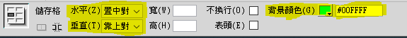
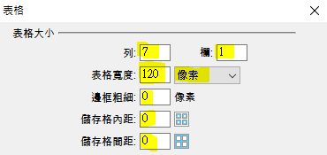
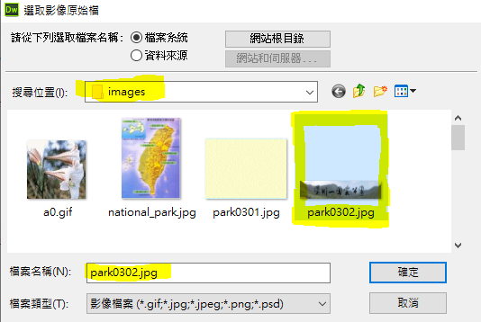
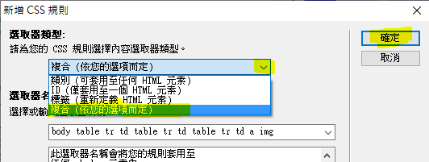
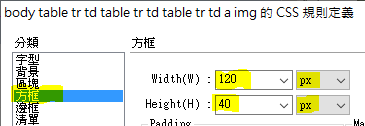
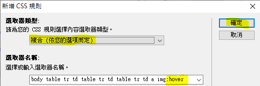
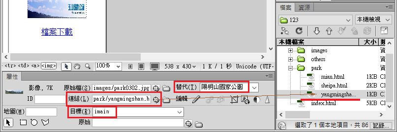
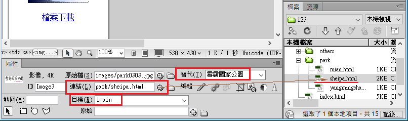
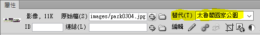
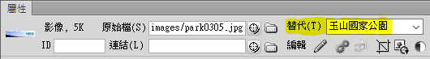

在頁面內的選單區按一下滑鼠左鍵。設定儲存格屬性如下圖：

點選 「插入 → 表格」，並按照下圖設定

在表格第一列點選 「插入 → 影像」，點選 images
資料夾→ park0302.jpg
在表格第三列點選 「插入 → 影像」，點選 park0303.jpg
其餘依此類推。

點選以上任一圖片， 按滑鼠右鍵 → CSS樣式 → 開新檔案
出現下圖後點選「複合」，按下「確定」

點選左側分類中的「方框」，再按照下圖設定寬度、高度。

點選以上任一圖片， 按滑鼠右鍵 → CSS樣式 → 開新檔案
出現下圖後點選「複合」，如下圖，在 img 後面輸入 :hover ，按下「確定」

點選左側分類中的「擴充功能」，如下圖，在 Filter 選單中點選 Invert
在 Invert 後面輸入 (1)

點選「陽明山國家公園」圖片。參照下圖，在屬性面板的「替代」欄位輸入「陽明山國家公園」。
設定「連結」欄位連結至 park 資料夾內的 yangmingshan.html
在「目標」欄位輸入 imain

點選「雪霸國家公園」圖片。參照下圖，在屬性面板的「替代」欄位輸入「雪霸國家公園」。
設定「連結」欄位連結至 park 資料夾內的 sheipa.html
在「目標」欄位輸入 imain

在7×1表格的右邊點一下滑鼠。按Enter鍵。
輸入「檔案下載」。
選取「檔案下載」四個字
選取「檔案下載」四個字。如下圖，在屬性面板點選 HTML 。
設定「連結」欄位連結至 others 資料夾內的 park.mp3

如下圖。在工具列點選「分割」，找到右邊這行程式碼

在 .mp3" 的後面輸入一個半型空白，及 download

點選「太魯閣國家公園」圖片。
參照下圖，在屬性面板的「替代」欄位輸入「太魯閣國家公園」。

點選「玉山國家公園」圖片。
參照下圖，在屬性面板的「替代」欄位輸入「玉山國家公園」。

| (六)選單區(完成結果) |
| 不使用影像處理軟體解題 |
| 1. 網頁背景顏色#00FFFF。💡 |
| 2. 網頁內製作一個71（七列一欄）表格，框線0像素，水平置中對齊。💡 |
| 3-1. 表格第一、三、五、七列分別插入park0302.jpg、park0303.jpg、park0304.jpg、park0305.jpg等四張圖片，💡 |
| 3-2. 每張圖片寬120px、高40px，水平置中對齊，💡 |
| 3-3. 當滑鼠移過時需呈現同樣圖片、不同顏色的動態效果。💡 → 💡 |
| 4. 表格中「陽明山國家公園」圖片替代文字為「陽明山國家公園」，並設定超連結到動作要求(七)的yangmingshan.htm(l)，呈現的目的區塊為網頁內容區。💡 |
| 5. 表格中「雪霸國家公園」圖片替代文字為「雪霸國家公園」，並設定超連結到動作要求(八)的sheipa.htm(l)，呈現的目的區塊為網頁內容區。💡 |
| 6. 表格中「太魯閣國家公園」圖片替代文字為「太魯閣國家公園」。💡 |
| 7. 表格中「玉山國家公園」圖片替代文字為「玉山國家公園」。💡 |
| 8. 表格下方輸入文字「檔案下載」💡，水平置中對齊，並設定超連結，且在點選超連結後具有下載park.mp3檔案的功能（即彈出檔案下載的視窗）。💡 |